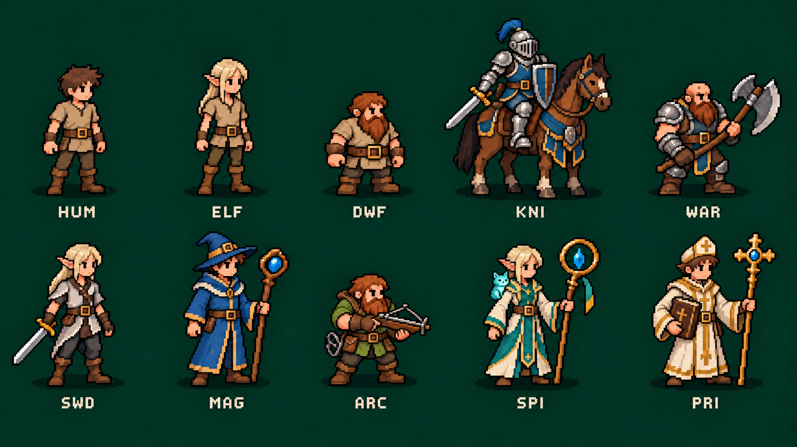
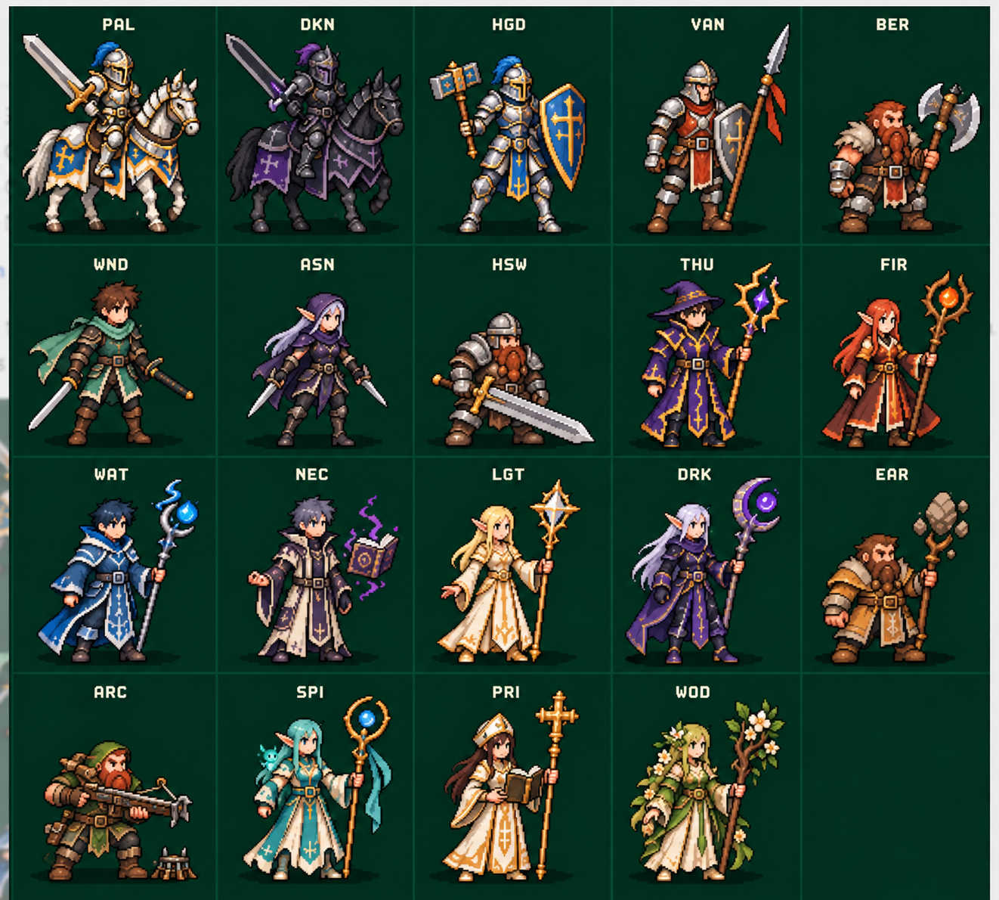

← RoadmapNhận diện nhân vật · r003
Thay concept ba class cũ. Đây là bản vẽ concept, chưa phải sprite hoặc animation dùng trong game. Giữ phong cách pixel cho thế giới 2.5D.
HGD chiến đấu trên bộ; VAN giáo và khiên; PRI sách và trượng chữ thập; SPI có tinh linh trên vai; WOD hoa/lá; Người Lùn dùng nỏ/bẫy. Có slot mũ. Ảnh 2D pixel cho thế giới 2.5D. Quy tắc hiện hành.
3 chủng tộc → 7 nghề cấp 15

Hàng trên: Con Người · Elf · Người Lùn · Kỵ Sĩ · Chiến Binh. Hàng dưới: Kiếm Sư · Pháp Sư · Cung Thủ · Tinh Linh · Mục Sư. Mỗi nghề dùng một race minh họa; không thay quyền chọn nghề.
19 nhánh cấp 30 · theo mẫu được chọn r006
Bản r003 bị phản hồi chưa đúng phong cách. Theo ảnh tham chiếu người dùng chọn: tỷ lệ trưởng thành, dáng thanh, pixel chi tiết vừa. r004/r005 không còn là chuẩn phong cách. Đây vẫn là concept, chưa được coi là sprite native đã nghiệm thu.

Chưa phải bộ asset hoàn chỉnh
Còn 16 tổ hợp race/nghề và 28 race/nhánh, bốn hướng, động tác, điểm cầm hai tay, layer trang bị và ngựa, cánh tiến hóa, avatar và VFX. Cánh không có sẵn trên dáng thường. Concept minh họa các điều chỉnh trong hồ sơ 208; chưa đổi gameplay hoặc chốt hệ số mới.
Prompt · Manifest và nguồn ảnh